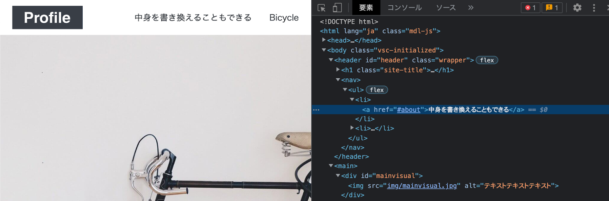

今回は「HTML+CSS」を扱う。
HTMLとCSSは世界のwebページで使われており、いわゆるフロントエンドである。
フロントエンドは目で見て成果がわかりやすく、また難易度も易しいことから、初学者に人気な言語だと思われる。
実際は、HTMLとCSSのみでwebサイトを構成することは少ないが、ここでの基本知識はJavaScriptを扱う際に大いに活きることだろう。
HTML(HyperText Markup Language)は、webページの土台となる言語です。
このHyperTextは、ハイパーリンクと呼ばれる、要はURLをクリックすると遷移することです。

参考: http://www.htmq.com/htmlkihon/images/001_01.png
マークアップ(Markup)とは
目印をつける。つまり、どのような役割を持っているのかを示すことです。
(例えばhタグは見出しの役割がある)

参考: http://www.htmq.com/htmlkihon/images/001_02.png
HTMLがあることによってchromeなどの検索エンジンはwebページの構造を理解することができるということになります。
(またよく言われるSEO(検索エンジン最適化)はこのHTMLを適切に書くことです。)
CSS(Cascading Style Sheets)は、webページのデザインを指定する言語です。
CSSはHTMLと組み合わせて使用する言語です。
HTMLが検索エンジンに向けた言語
CSSがユーザに向けた言語
になります。つまり、HTMLのh1とh2タグでは文字の大きさが変わりますが、これをデザインとして用いないということです。大きい文字にしたかったらCSSで変えましょうということです。
基本的にhtmlは<body></body>の中に書くことになる。
HTMLやCSSの詳細については割愛するが、後述するサイトで学んだり、実際に書くうちに自ずと分かると思われる。
index.htmlを用意する
SPSS2022/day6/index.html
<!DOCTYPE html>
<html>
<head>
<meta charset="UTF-8">
<title>title</title>
</head>
<body>
<h1>Hello World!</h1>
</body>
</html>動作確認その1
htmlファイルをブラウザで表示させることで動作確認をすることができる。
vscodeのindex.htmlをブラウザのタブに移動させてみよう。以下のように表示されるはずだ。
stylesheet.cssを用意する
cssを用いてhtmlのh1タグの色を変えてみよう。
まずはhtmlでcssファイルを読み込む設定をしよう。
SPSS2022/day6/index.html
<!DOCTYPE html>
<html>
<head>
<link href="stylesheet.css" rel="stylesheet" type="text/css">
<meta charset="UTF-8">
<title>title</title>
</head>
<body>
<h1>Hello World!</h1>
</body>
</html>
<link ...>でcssファイルを読み込むことができる。
次にcssファイルを用意しよう
SPSS2022/day6/stylesheet.css
h1 {
color: aqua;
}動作確認
ブラウザをリロードして、テキストの色が変わっていることを確認しよう。
HTMLやCSSについてもっと知りたい。
例えばHTMLリファレンスを参考にすると、詳細を知ることができる。
チュートリアルもあり、おすすめ。
HTMLとCSSの腕を上げるためには以下の点が重要になる。
- HTMLのタグを理解する点
- CSSのプロパティの効果を理解する点
- UIのパーツを意識する点
- レスポンシブを意識する点
HTMLとCSSについて理解することはもちろんだが、UIのパーツを意識することは、無駄のないデザインにするために必要である。
参考: https://code-step.com/wp-content/themes/code-step/img/html/profile/mainvisual-l.webp
簡単なUIパーツではheaderである。headerを構成している要素を1つ1つ分解してコーディングしよう。
模写コーディング
最初に1から自分でコーディングするのは、非常に危険だ。なぜなら、webサイトがどういった構成をしているかを把握することができないからだ。
そこで「模写コーディング」を行って、webサイトの構成を理解するところから始めよう。
模写コーディングは実際のwebサイトのHTMLとCSSを自分でコーディングすることである。
そして、模写コーディングを行う方法として、2つの方法がある。
- 検証ツールを用いて答えを見ながら模写コーディング
- 検証ツールを用いずに模写コーディング
最初は前者の検証ツールを用いて模写コーディングをおすすめする。慣れてきたら検証ツールを用いずに模写コーディングをしよう。
検証ツールを使おう
検証ツールはwebサイト上で「右クリック -> 検証」をクリックすると使える。
お使いのブラウザやOSによって個人差はあるが、大体検証に似たボタンをクリックすると使える。
検証をクリックすると右側に何かが表示されるが、これが検証画面である。
今右側の「要素」タブで表示されているものが、このwebページでのHTMLである。

HTMLタグをダブルクリックすると、要素を書き換えることもできる。
またこのカーソルアイコンをクリックすると画面にカーソルを当てると、詳細を知ることができる。
次に、「スタイル」タブをみると、CSSの設定をみることができる。
基本的には、この「要素」と「スタイル」プロパティをみることで模写コーディングすることができるだろう。
SPSS2022/day6/に「work.html」と「work.css」を用意する。
https://code-step.com/demo/html/profile/index.htmlのサイトの模写コーディングをやってみよう。
条件1 手打ちでやろう
HTMLに限らず最初は手打ちで動作を意識しながらコーディングしよう。
慣れてきたら、コピペしよう。
(偏見ですが、最初から全てコピペでプログラミングする人は成長しない傾向がある)
条件2 自分で画像を用意しよう。
割愛するが、今回参考にするサイトの画像が手元にないと、完全な模写ができない。
そこで、Unsplash(ロイヤルティーフリーの画像を提供しているサイト)で任意の画像をダウンロードし、SPSS2022/day6/img/上に移動させよう。
以下のテンプレートをコピペしてから模写コーディングをしよう。
SPSS2022/day6/work.html
<!DOCTYPE html>
<html>
<head>
<link href="work.css" rel="stylesheet" type="text/css">
<meta charset="UTF-8">
<title>確認課題#6</title>
</head>
<body>
</body>
</html>答えは検証ツールで見られるので省略します。
各自、先のHTMLリファレンスをやってみてはいかがだろうか。
今回はHTMLとCSSを扱った。
HTMLとCSSの他にJavaScriptを用いることによって、より複雑な画面を構成することができるが、day7の「React.js」ではJavaScriptを扱う。
いつも自分が見ているWebサイトを検証ツールで覗いてみると新たな発見があるかもしれない。